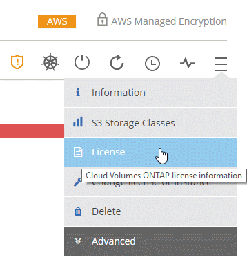
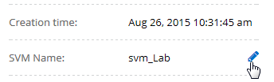

Dokumentationsänderungen beantragen
Dokumentationsänderungen beantragen In GitHub bearbeiten
In GitHub bearbeiten Leitfaden für Beitragende
Leitfaden für BeitragendeGehen Sie zur Dokumentation für die neueste Version.
Ändern von Cloud Volumes ONTAP Systemen
Beitragende
Möglicherweise müssen Sie die Konfiguration von Cloud Volumes ONTAP Instanzen ändern, wenn sich Ihre Storage-Anforderungen ändern. Sie können beispielsweise zwischen nutzungsbasierten Konfigurationen wechseln, die Instanz oder den VM-Typ ändern und zu einem alternativen Abonnement wechseln.
Installation von Lizenzdateien auf Cloud Volumes ONTAP Byol Systemen
Wenn Cloud Manager keine Byol Lizenzdatei von NetApp erhalten kann, können Sie die Datei selbst beziehen und die Datei dann manuell in Cloud Manager hochladen, damit die Lizenz auf dem Cloud Volumes ONTAP System installiert werden kann.
-
Wechseln Sie zum "NetApp Lizenzdatei-Generator" Und loggen Sie sich mit Ihren Anmeldedaten für die NetApp Support Site ein.
-
Geben Sie Ihr Passwort ein, wählen Sie Ihr Produkt aus, geben Sie die Seriennummer ein, bestätigen Sie, dass Sie die Datenschutzrichtlinie gelesen und akzeptiert haben, und klicken Sie dann auf Absenden.
Beispiel

-
Wählen Sie aus, ob Sie die Datei serialnumber.NLF JSON per E-Mail oder direkt herunterladen möchten.
-
Öffnen Sie in Cloud Manager die BYOL-Arbeitsumgebung von Cloud Volumes ONTAP.
-
Klicken Sie auf das Menü-Symbol und dann auf Lizenz.

-
Klicken Sie Auf Lizenzdatei Hochladen.
-
Klicken Sie auf Upload und wählen Sie dann die Datei aus.
Cloud Manager installiert die neue Lizenzdatei auf dem Cloud Volumes ONTAP System.
Ändern des Instanz- oder Maschinentyps für Cloud Volumes ONTAP
Bei der Einführung von Cloud Volumes ONTAP in AWS, Azure oder GCP können Sie zwischen verschiedenen Instanzen oder Maschinentypen wählen. Sie können den Instanz- oder Maschinentyp jederzeit ändern, wenn Sie feststellen, dass er für Ihre Anforderungen unterdimensioniert oder überdimensioniert ist.
-
Automatisches Giveback muss auf einem Cloud Volumes ONTAP HA-Paar aktiviert sein (dies ist die Standardeinstellung). Wenn nicht, schlägt der Vorgang fehl.
-
Der Vorgang startet Cloud Volumes ONTAP neu.
Bei Systemen mit einem Node wird die I/O unterbrochen.
Bei HA-Paaren ist die Änderung unterbrechungsfrei. Ha-Paare stellen weiterhin Daten bereit.
-
Eine Änderung des Instanz- oder Maschinentyps wirkt sich auf die Servicegebühren von Cloud-Providern aus.
-
Klicken Sie in der Arbeitsumgebung auf das Menü-Symbol und dann auf Lizenz oder Instanz ändern für AWS, Lizenz ändern oder VM für Azure oder Lizenz oder Rechner ändern für GCP.
-
Wenn Sie eine nutzungsbasierte Konfiguration verwenden, können Sie optional eine andere Lizenz auswählen.
-
Wählen Sie eine Instanz oder einen Maschinentyp aus, aktivieren Sie das Kontrollkästchen, um zu bestätigen, dass Sie die Auswirkungen der Änderung verstehen, und klicken Sie dann auf OK.
Cloud Volumes ONTAP wird mit der neuen Konfiguration neu gestartet.
Wechsel zwischen nutzungsbasierten Konfigurationen
Nachdem Sie Pay-as-you-go Cloud Volumes ONTAP Systeme gestartet haben, können Sie jederzeit zwischen den Konfigurationen Explore, Standard und Premium wechseln, indem Sie die Lizenz ändern. Das Ändern der Lizenz erhöht oder verringert die Obergrenze für die Rohkapazität und ermöglicht die Auswahl aus verschiedenen AWS Instanztypen oder Azure Virtual Machine-Typen.

|
In GCP ist für jede Pay-as-you-go-Konfiguration ein einziger Maschinentyp verfügbar. Sie können nicht zwischen verschiedenen Maschinentypen wählen. |
Beachten Sie Folgendes, um zwischen nutzungsbasierten Lizenzen zu wechseln:
-
Der Vorgang startet Cloud Volumes ONTAP neu.
Bei Systemen mit einem Node wird die I/O unterbrochen.
Bei HA-Paaren ist die Änderung unterbrechungsfrei. Ha-Paare stellen weiterhin Daten bereit.
-
Eine Änderung des Instanz- oder Maschinentyps wirkt sich auf die Servicegebühren von Cloud-Providern aus.
-
Klicken Sie in der Arbeitsumgebung auf das Menü-Symbol und dann auf Lizenz oder Instanz ändern für AWS, Lizenz ändern oder VM für Azure oder Lizenz oder Rechner ändern für GCP.
-
Wählen Sie einen Lizenztyp und einen Instanztyp oder Maschinentyp aus, aktivieren Sie das Kontrollkästchen, um zu bestätigen, dass Sie die Auswirkungen der Änderung verstehen, und klicken Sie dann auf OK.
Cloud Volumes ONTAP wird mit der neuen Lizenz, dem Instanztyp oder dem Maschinentyp oder beides neu gebootet.
Wechsel zu einer alternativen Cloud Volumes ONTAP Konfiguration
Wenn Sie zwischen einem nutzungsbasierten Abonnement und einem Byol Abonnement oder zwischen einem einzelnen Cloud Volumes ONTAP System und einem HA-Paar wechseln möchten, können Sie ein neues System implementieren und dann Daten vom vorhandenen System auf das neue System replizieren.
-
Erstellen Sie eine neue Cloud Volumes ONTAP Arbeitsumgebung.
-
"Einmalige Datenreplizierung einrichten" Zwischen den Systemen für jedes zu replizierende Volume wechseln.
-
Beenden Sie das Cloud Volumes ONTAP System, das Sie von nicht mehr benötigen "Die ursprüngliche Arbeitsumgebung wird gelöscht".
Ändern des AWS Marketplace Abonnements
Ändern Sie das AWS Marketplace Abonnement für Ihr Cloud Volumes ONTAP System, wenn Sie das AWS Konto, von dem Sie belastet werden, ändern möchten.
-
Wenn Sie dies noch nicht getan haben, fügen Sie ein neues Abonnement von hinzu "Cloud Manager im AWS Marketplace".
-
Klicken Sie in der Arbeitsumgebung in Cloud Manager auf das Menü-Symbol und dann auf Marketplace-Abonnement.
-
Wählen Sie ein Abonnement aus der Dropdown-Liste aus.
-
Klicken Sie Auf Speichern.
Ändern der Schreibgeschwindigkeit auf „Normal“ oder „hoch“
Die standardmäßige Schreibgeschwindigkeit für Cloud Volumes ONTAP ist normal. Wenn für Ihren Workload eine hohe Schreib-Performance erforderlich ist, kann die hohe Schreibgeschwindigkeit geändert werden. Bevor Sie die Schreibgeschwindigkeit ändern, sollten Sie dies tun "Die Unterschiede zwischen den normalen und den hohen Einstellungen verstehen".
-
Stellen Sie sicher, dass Vorgänge wie die Volume- oder Aggregaterstellung nicht ausgeführt werden.
-
Beachten Sie, dass durch diese Änderung Cloud Volumes ONTAP neu gestartet wird.
Bei Systemen mit einem Node wird die I/O unterbrochen.
Bei HA-Paaren ist die Änderung unterbrechungsfrei. Ha-Paare stellen weiterhin Daten bereit.
-
Klicken Sie in der Arbeitsumgebung auf das Menüsymbol und dann auf Erweitert > Schreibgeschwindigkeit.
-
Wählen Sie normal oder hoch.
Wenn Sie „hoch“ wählen, müssen Sie die „Ich verstehe…“-Aussage lesen und bestätigen, indem Sie das Kästchen aktivieren.
-
Klicken Sie auf Speichern, überprüfen Sie die Bestätigungsmeldung und klicken Sie dann auf Weiter.
Ändern des Namens der virtuellen Storage-Maschine
Cloud Manager benennt die Storage Virtual Machine (SVM) für Cloud Volumes ONTAP automatisch. Sie können den Namen der SVM ändern, wenn Sie strenge Benennungsstandards haben. Sie sollten beispielsweise festlegen, wie Sie die SVMs für Ihre ONTAP Cluster benennen.
-
Klicken Sie in der Arbeitsumgebung auf das Menü-Symbol und dann auf Information.
-
Klicken Sie auf das Bearbeitungssymbol rechts neben dem SVM-Namen.

-
Ändern Sie im Dialogfeld SVM-Name ändern den SVM-Namen und klicken Sie dann auf Speichern.
Ändern des Passworts für Cloud Volumes ONTAP
Cloud Volumes ONTAP enthält ein Cluster-Administratorkonto. Sie können das Kennwort für dieses Konto bei Bedarf über Cloud Manager ändern.

|
Sie sollten das Kennwort für das Administratorkonto nicht über System Manager oder die CLI ändern. Das Kennwort wird nicht in Cloud Manager angezeigt. Daher kann Cloud Manager die Instanz nicht ordnungsgemäß überwachen. |
-
Klicken Sie in der Arbeitsumgebung auf das Menüsymbol und dann auf Erweitert > Passwort festlegen.
-
Geben Sie das neue Passwort zweimal ein und klicken Sie dann auf Speichern.
Das neue Kennwort muss sich von einem der letzten sechs Kennwörter unterscheiden.
Ändern der Netzwerk-MTU für c4.4xlarge und c4.8xlarge Instanzen
Standardmäßig ist Cloud Volumes ONTAP so konfiguriert, dass 9.000 MTU (auch Jumbo Frames genannt) verwendet werden, wenn Sie die c4.4xlarge Instanz oder die c4.8xlarge Instanz in AWS auswählen. Sie können die Netzwerk-MTU auf 1.500 Byte ändern, wenn dies für Ihre Netzwerkkonfiguration besser geeignet ist.
Eine maximale Netzwerkübertragungseinheit (Maximum Transmission Unit, MTU) von 9.000 Byte bietet den höchstmöglichen Netzwerkdurchsatz für bestimmte Konfigurationen.
9.000 MTU ist eine gute Wahl, wenn Clients in demselben VPC mit dem Cloud Volumes ONTAP System kommunizieren und einige oder alle dieser Clients ebenfalls 9.000 MTU unterstützen. Wenn der Datenverkehr den VPC verlässt, kann es zu einer Paketfragmentierung kommen, die die Performance beeinträchtigt.
Eine Netzwerk-MTU von 1.500 Byte ist eine gute Wahl, wenn Clients oder Systeme außerhalb des VPC mit dem Cloud Volumes ONTAP System kommunizieren.
-
Klicken Sie in der Arbeitsumgebung auf das Menüsymbol und dann auf Erweitert > Netzwerknutzung.
-
Wählen Sie Standard oder Jumbo Frames.
-
Klicken Sie Auf Ändern.
Ändern von Routingtabellen im Zusammenhang mit HA-Paaren in mehreren AWS AZS
Sie können die AWS-Routing-Tabellen mit Routen zu den unverankerten IP-Adressen für ein HA-Paar ändern. Vielleicht möchten Sie dies tun, wenn neue NFS- oder CIFS-Clients auf ein HA-Paar in AWS zugreifen müssen.
-
Klicken Sie in der Arbeitsumgebung auf das Menü-Symbol und dann auf Information.
-
Klicken Sie Auf Routentabellen.
-
Ändern Sie die Liste der ausgewählten Routentabellen und klicken Sie dann auf Speichern.
Cloud Manager sendet eine AWS-Anforderung zum Ändern der Routentabellen.